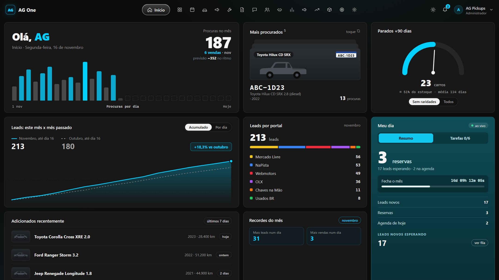
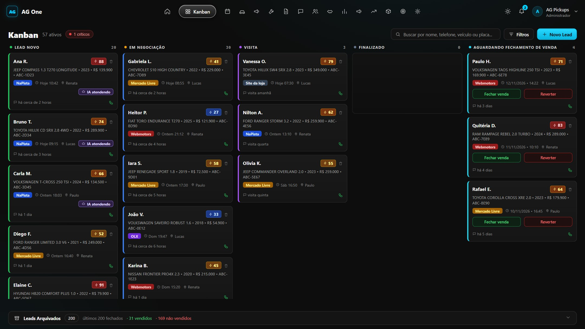
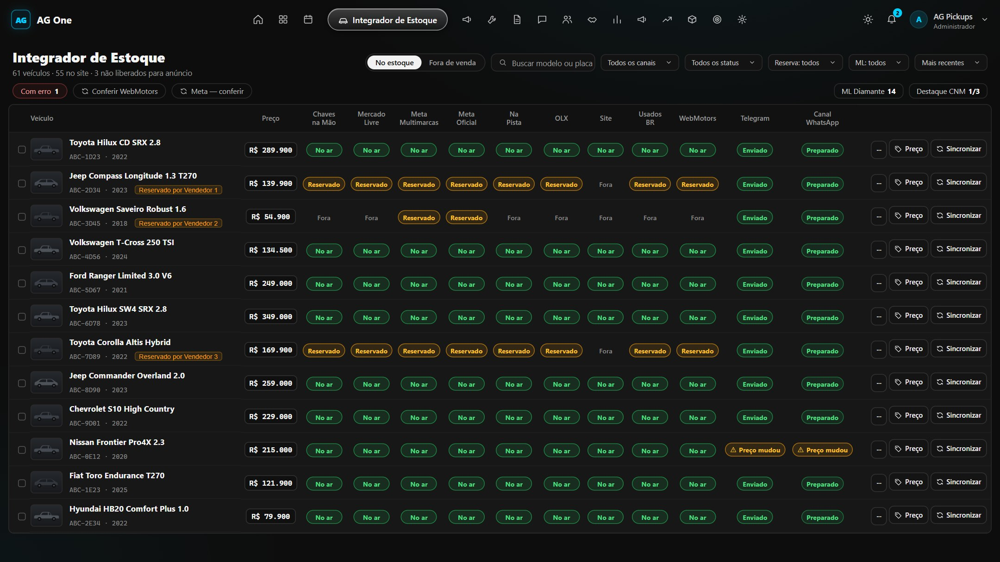
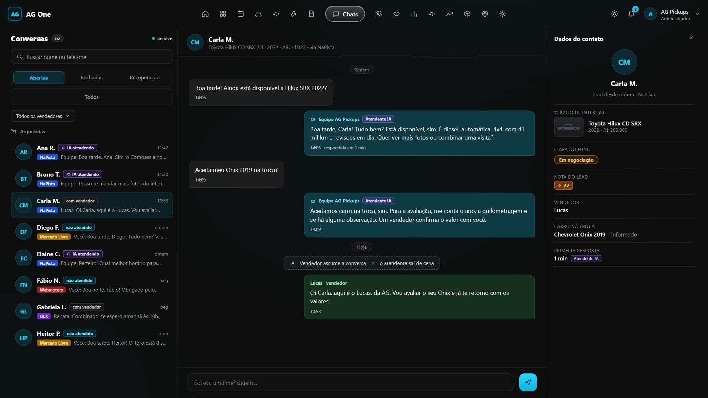

Há 9 anos na AG Pickups e Multimarcas, uma loja de veículos com mais de 50 anos. Vi onde a operação travava e conduzi, com IA, a construção do sistema que a loja usa hoje.
Do sistema de uma loja real a apps pessoais. Cada um nasceu de uma necessidade, não de um tutorial.
Em produção desde jul/2026
AG One — ecossistema de gestão automotiva
O sistema onde a loja opera: estoque, anúncios, leads, clientes, vendas, financeiro e marketing. O veículo é cadastrado uma vez e o sistema cuida do resto. Todo contato, de qualquer origem, cai num funil só, sem duplicata e com vendedor definido.
Estoque: ficha completa do veículo (166 campos, fotos, opcionais e histórico).
Integrador de anúncios: publica, atualiza e retira o anúncio em vários portais (REST/OAuth, SOAP, feed XML) e verifica se o anúncio está no ar e se realmente saiu na retirada.
Leads: 7 origens, anti-duplicidade, distribuição ao vendedor e alerta de lead parado.
Gestão: vendas e financeiro, indicadores, campanhas com conversões enviadas ao Meta e ao Google.
IA: atendente 24h pelo WhatsApp, liberado em nov/2026 em parte dos portais e ainda em treinamento, com travas de horário e limite por lead; recuperação de leads perdidos com aprovação do dono.

Início: procura, carros parados, leads por portal e o "Meu dia".

Funil de leads: todo contato com dono, nota e o selo "IA atendendo".

Integrador: onde cada carro está anunciado, canal por canal.

Chats: o atendente de IA responde e sai de cena quando o vendedor assume.
Telas reconstruídas com nomes, placas e valores fictícios. Nenhum dado real da loja ou de clientes aparece.
Sistema privado, de uso interno da loja: não há demonstração pública. Desenvolvido com um colega de trabalho e com IA; eu conduzo requisitos, regras de negócio, prioridades e validação.
Vitrine pública da loja, sincronizada ao AG One: busca com filtros, página de cada veículo, SEO e captura de leads por WhatsApp, avaliação do usado e encomenda de zero km.
App de leitura bíblica que funciona offline e se instala no celular: Bíblia completa, planos de leitura, estudos por série, login com sincronização e IA opcional com a chave protegida no servidor.
App de controle de estoque e vendas de um ateliê artesanal, de uso próprio. O app real tem dados reais e não é público, então esta é uma simulação com produtos e vendas inventados: dá para navegar, vender e mover estoque, mas nada é salvo.